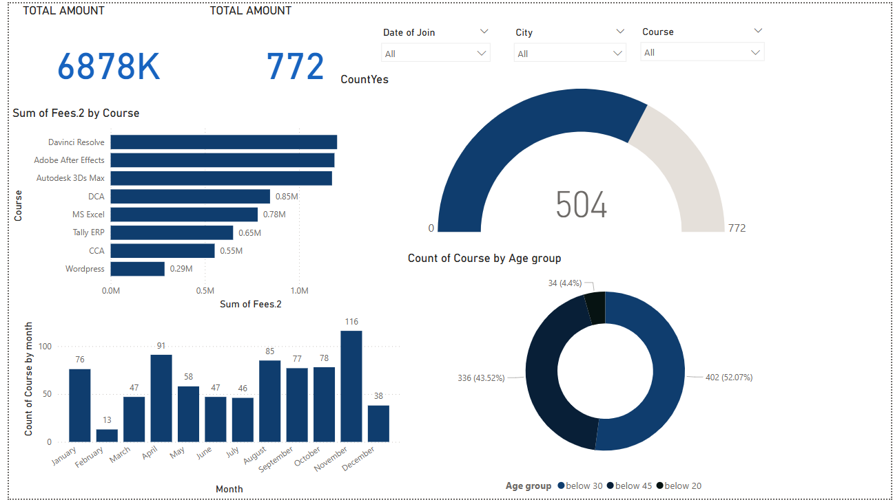

>
run analysis --type=supermarket --depth=full
>
loading datasets...
>
analysis complete. displaying results:
Super Market Analysis 🛒📊

Supermarket analysis involves studying sales trends, customer behavior, and inventory management to optimize business operations and increase revenue. It uses data analytics, visualization, and machine learning to make data-driven decisions.
Key Aspects of Supermarket Analysis:
Sales Performance
Identify best-selling products, seasonal trends, and revenue growth patterns to optimize product placement and marketing strategies.
Time Series Analysis
Revenue Forecasting
Customer Behavior
Analyze purchase patterns, customer demographics, and loyalty program effectiveness to enhance customer experience.
RFM Analysis
Cluster Analysis
Inventory Management
Optimize stock levels, reduce waste, and forecast demand to maintain ideal inventory turnover ratios.
Demand Forecasting
ABC Analysis
Pricing Strategies
Evaluate the impact of discounts, promotions, and competitive pricing on sales volume and profit margins.
Price Elasticity
Promotion Analysis
Market Basket Analysis
Discover product relationships to improve cross-selling strategies and optimize product placement.
Apriori Algorithm
Association Rules
Technologies Used:
Python & Pandas - For data cleaning, transformation, and advanced analysis
SQL - For querying large datasets efficiently
Power BI / Tableau - For creating interactive dashboards and visualizations
Machine Learning - For predictive analytics and demand forecasting
Example Insights from a Supermarket Analysis:
Peak Sales Hours - Identify rush hours for better staffing and stock management
Top-Selling Products - Understand what customers buy the most to optimize inventory
Customer Segmentation - Group customers based on spending habits for targeted marketing
Product Recommendations - Suggest items frequently bought together (e.g., milk & cereal)
>
analysis_session_ended